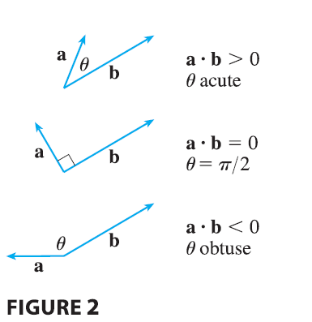
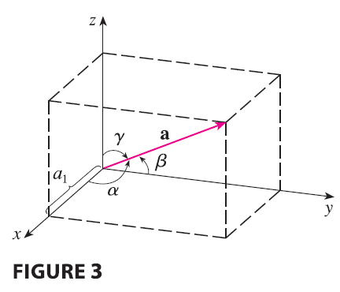

Because \(\cos\theta > 0\) if \(0 \le \theta < \pi/2\) and \(\cos\theta < 0\) if \(\pi/2 < \theta \le \pi\), we see that \(\mathbf{a} \cdot \mathbf{b}\) is positive for \(\theta < \pi/2\) and negative for \(\theta > \pi/2\). We can think of \(\mathbf{a} \cdot \mathbf{b}\) as measuring the extent to which a and b point in the same direction. The dot product \(\mathbf{a} \cdot \mathbf{b}\) is positive if a and b point in the same general direction, 0 if they are perpendicular, and negative if they point in generally opposite directions (see Figure 2). In the extreme case where a and b point in exactly the same direction, we have \(\theta = 0\), so \(\cos\theta = 1\) and \[ \mathbf{a} \cdot \mathbf{b} = |\mathbf{a}||\mathbf{b}| \] If a and b point in exactly opposite directions, then we have \(\theta = \pi\) and so \(\cos\theta = -1\) and \(\mathbf{a} \cdot \mathbf{b} = -|\mathbf{a}||\mathbf{b}|\).
The direction angles of a nonzero vector a are the angles \(\alpha, \beta,\) and \(\gamma\) (in the interval \([0, \pi]\)) that a makes with the positive x-, y-, and z-axes, respectively. (See Figure 3.)

The cosines of these direction angles, \(\cos\alpha, \cos\beta,\) and \(\cos\gamma\), are called the direction cosines of the vector a. Using Corollary 6 with b replaced by i, we obtain \[ \cos\alpha = \frac{\mathbf{a} \cdot \mathbf{i}}{|\mathbf{a}||\mathbf{i}|} = \frac{a_1}{|\mathbf{a}|} \tag{8} \] (This can also be seen directly from Figure 3.) Similarly, we also have \[ \cos\beta = \frac{a_2}{|\mathbf{a}|} \quad \cos\gamma = \frac{a_3}{|\mathbf{a}|} \tag{9} \] By squaring the expressions in Equations 8 and 9 and adding, we see that \[ \cos^2\alpha + \cos^2\beta + \cos^2\gamma = 1 \tag{10} \] We can also use Equations 8 and 9 to write \[ \mathbf{a} = \langle a_1, a_2, a_3 \rangle = \langle |\mathbf{a}|\cos\alpha, |\mathbf{a}|\cos\beta, |\mathbf{a}|\cos\gamma \rangle = |\mathbf{a}|\langle \cos\alpha, \cos\beta, \cos\gamma \rangle \] Therefore \[ \frac{1}{|\mathbf{a}|}\mathbf{a} = \langle \cos\alpha, \cos\beta, \cos\gamma \rangle \tag{11} \] which says that the direction cosines of a are the components of the unit vector in the direction of a.
EXAMPLE 5 Find the direction angles of the vector \(\mathbf{a} = \langle 1, 2, 3 \rangle\).